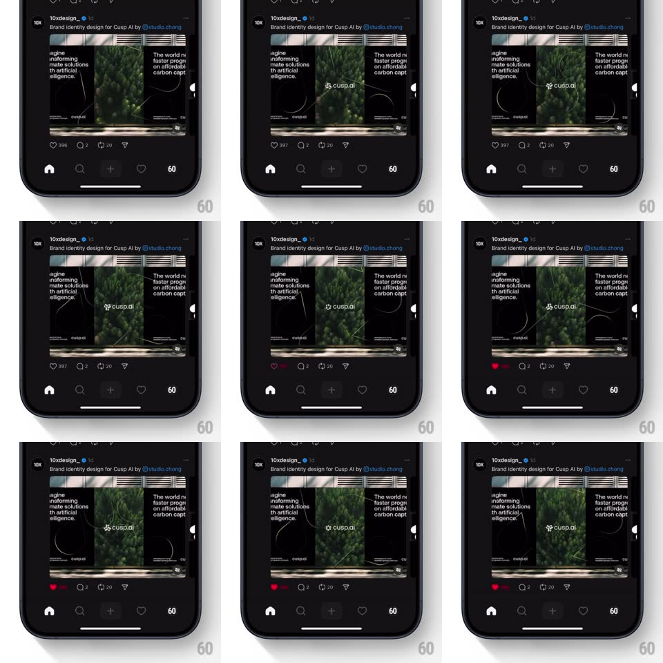

Media
Frame-by-frame

Rebuild this interaction 1:1: Threads' like count-up - tapping the heart scales it with a springy pop while the like count beside it rolls vertically like a ticker, the new digit sliding up over the old.

Rebuild this interaction 1:1: Threads' like count-up - tapping the heart scales it with a springy pop while the like count beside it rolls vertically like a ticker, the new digit sliding up over the old. ## Integration Integration: stack-agnostic spec - springs given as stiffness/damping, timed motions as duration + curve; map every value to your framework and animation library of choice. ## Scene A dark Threads post (10xdesign_, "Brand identity design for Cusp AI by @studio.chang", a multi-image carousel below). The action row: heart with count (396), reply (2), repost (20), share. The tab bar sits below. ## Motion spec Pattern: heart pop + rolling digit ticker. - Tap the heart: it fills red and pops (scale 1 -> 1.35 -> 1, spring ~500/18, ~300ms) with a faint particle puff. - The count rolls like an odometer: only the changing digit column moves - the old digit slides up and out while the new one slides up from below (250ms, ease-out), sharing one clipping mask; 396 -> 397 rolls just the last digit. - Unlike: heart pops smaller (1 -> 0.85 -> 1), fills out to outline, and the digit rolls down instead - direction follows the delta. - The count's width adjusts with a quick layout spring so digits never jump. ## Calibration - Roll only the digits that changed - the rest of the number stays pinned. - Total sequence under 400ms; the heart pop leads, the ticker follows 50ms behind. ## Reduced motion Heart crossfades fill state; count swaps with a fade. ## Don't miss - The ticker moves UP for a like and DOWN for an unlike - direction carries meaning. - The red fill lands at the peak of the heart's scale, not before.